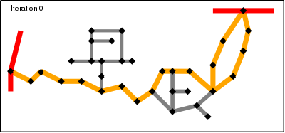
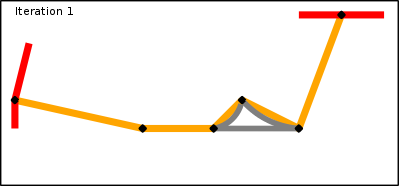
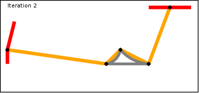

Algorithms
This page describes the development of the algorithm that is used in Routino for finding routes.Simplest Algorithm
The algorithm to find a route is fundamentally simple: Start at the beginning, follow all possible routes and keep going until you reach the end.While this method does work, it isn't fast. To be able to find a route quickly needs a different algorithm, one that can find the correct answer without wasting time on routes that lead nowhere.
Improved Algorithm
The simplest way to do this is to follow all possible segments from the starting node to the next nearest node (an intermediate node in the complete journey). For each node that is reached store the shortest route from the starting node and the length of that route. The list of intermediate nodes needs to be maintained in order of shortest overall route on the assumption that there is a straight line route from here to the end node.At each point the intermediate node that has the shortest potential overall journey time is processed before any other node. From the first node in the list follow all possible segments and place the newly discovered nodes into the same list ordered in the same way. This will tend to constrain the list of nodes examined to be the ones that are between the start and end nodes. If at any point you reach a node that has already been reached by a longer route then you can discard that route since the newly discovered route is shorter. Conversely if the previously discovered route is shorter then discard the new route.
At some point the end node will be reached and then any routes with potential lengths longer than this actual route can be immediately discarded. The few remaining potential routes must be continued until they are found to be shorter or have no possibility of being shorter. The shortest possible route is then found.
At all times when looking at a node only those segments that are possible by the chosen means of transport are followed. This allows the type of transport to be handled easily. When finding the quickest route the same rules apply except that criterion for sorting is the shortest potential route (assuming that from each node to the end is the fastest possible type of highway).
This method also works, but again it isn't very fast. The problem is that the complexity is proportional to the number of nodes or segments in all routes examined between the start and end nodes. Maintaining the list of intermediate nodes in order is the most complex part.
Final Algorithm
The final algorithm that is implemented in the router is basically the one above but with an important difference. Instead of finding a long route among a data set of 8,000,000 nodes (number of highway nodes in UK at beginning of 2010) it finds one long route in a data set of 1,000,000 nodes and a few hundred very short routes in the full data set. Since the time taken to find a route is proportional to the number of nodes the main route takes 1/10th of the time and the very short routes take almost no time at all.The solution to making the algorithm fast is therefore to discard most of the nodes and only keep the interesting ones. In this case a node is deemed to be interesting if it is the junction of two segments with different properties. In the algorithm these are classed as super-nodes. Starting at each super-node a super-segment is generated that finishes on another super-node and contains the shortest path along segments with identical properties (and these properties are inherited by the super-segment). The point of choosing the shortest route is that since all segments considered have identical properties they will be treated identically when properties are taken into account. This decision making process can be repeated until the only the most important and interesting nodes remain.



To find a route between a start and finish point now comprises the following steps (assuming a shortest route is required):
- Find all shortest routes from the start point along normal segments and stopping when super-nodes are reached.
- Find all shortest routes from the end point backwards along normal segments and stopping when super-nodes are reached.
- Find the shortest route along super-segments from the set of super-nodes in step 1 to the set of super-nodes in step 2 (taking into account the lengths found in steps 1 and 2 between the start/finish super-nodes and the ultimate start/finish point).
- For each super-segment in step 3 find the shortest route between the two end-point super-nodes.
Routing Preferences
One of the important features of Routino is the ability to select a route that is optimum for a set of criteria such as preferences for each type of highway, speed limits and other restrictions and highway properties.All of these features are handled by assigning a score to each segment while calculating the route and trying to minimise the score rather than simply minimising the length.
- Segment length
- When calculating the shortest route the length of the segment is the starting point for the score.
- Speed preference
- When calculating the quickest route the time taken calculated from the length of the segment and the lower of the highway's own speed limit and the user's speed preference for the type of highway is the starting point for the score.
- Oneway restriction
- If a highway has the oneway property in the opposite direction to the desired travel and the user's preference is to obey oneway restrictions then the segment is ignored.
- Weight, height, width & length limits
- If a highway has one of these limits and its value is less than the user's specified requirement then the segment is ignored.
- Highway preference
- The highway preference specified by the user is a percentage, these are scaled so that the most preferred highway type has a weighted preference of 1.0 (0% always has a weighted preference of 0.0). The calculated score for a segment is divided by this weighted preference.
- Highway properties
- The other highway properties are specified by the user as a percentage and each highway either has that property or not. The user's property preference is scaled into the range 0.0 (for 0%) to 1.0 (for 100%) to give a weighted preference, a second "non-property" weighted preference is calcuated in the same way after subtracting the user's preference from 100%. If a segment has a particular property then the calculated score is divided by the weighted preference for that property, if the segment does not have this property then it is divided by the non-property weighted preference. To ensure that setting property preferences near 50% do not cause large variations in routes the highway's preference is found by taking the square root of the property preference.
Implementation
The hardest part of implementing this router is the data organisation. The arrangement of the data to minimise the number of operations required to follow a route from one node to another is much harder than designing the algorithm itself.The final implementation uses a separate table for nodes, segments and ways. Each table individually is implemented as a C-language data structure that is written to disk by a program which parses the OpenStreetMap XML data file. In the router these data structures are memory mapped so that the operating system handles the problems of loading the needed data blocks from disk.
Each node contains a latitude and longitude and they are sorted geographically
so that converting a latitude and longitude coordinate to a node is fast as well
as looking up the coordinate of a node. The node also contains the location in
the array of segments for the first segment that uses that node.
Each segment contains the location of the two nodes as well as the way that the
segment came from. The location of the next segment that uses one of the two
nodes is also stored; the next segment for the other node is the following one
in the array. The length of the segment is also pre-computed and stored.
Each way has a name, a highway type, a list of allowed types of traffic, a speed
limit, any weight, height, width or length restrictions and the highway
properties.
The super-nodes are mixed in with the nodes and the super-segments are mixed in with the segments. For the nodes they are the same as the normal nodes, so just a flag is needed to indicate that they are super. The super-segments are in addition to the normal segments so they increase the database size (by about 10%) and are also marked with a flag.
Practicalities
At the time of writing (April 2010) the OpenStreetMap data for Great Britain (taken from GeoFabrik ) contains:- 14,675,098 nodes
- 8,767,521 are highway nodes
- 1,120,297 are super-nodes
- 1,876,822 ways
- 1,412,898 are highways
- 9,316,328 highway segments
- 1,641,009 are super-segments
- 1,412,898 are highways
- 60,572 relations